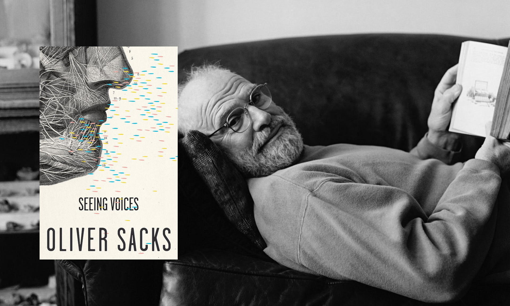

聽損孩子的成長之路（三）教學面臨的爭議與限制
最大的爭議，來自聾人的不平；另一方面，還是有些孩子，有手有口卻難言。
口語與手語之爭：語言的政治
當我們討論聽障孩子學習口語的歷程，與口語教學技術的傳播，就不能不提到它對手語聾人社群的影響。語言並不僅僅只是溝通的工具，或許我們可以想想，除了溝通之外，語言還有什麼功能？
一個解答是，語言可以形塑人們對自己族群的認同，而認同也同時使人們珍視自己的語言，並且把它傳給下一代。但是，有時候學校裡教些什麼，跟受教者的期待會有落差。
在學校講方言被逮到，要罰錢，掛狗牌，大概是很多台灣四、五年級生心裡很受傷的童年陰影。大家都得在學校學一口標準的中文。而閩南語、客家語與原住民諸族語言，即使到現在，還往往在大眾傳媒上被污名為土氣落伍的下層社會語言。
語言的認同與政治性，也體現在手語和口語間，它們長期被認為是相互競爭的關係。在聽障與聾人研究中，最常被提起的就是「聽障者」與「聾人」的認同與文化差異。
「聾人」，英文以大寫「Deaf」表示。對有強烈聾人認同的人來說，「聾」並不需要治療。聽力比較差如同直髮或捲髮、美人尖或羅馬腳一樣，都是一種中性的生理特性。也因此，社會不應該用殘疾的眼光看待他們，要求他們接受幫助並回歸主流社會，而應該正視聾的差異並尊重多元、平等的價值。
會形塑這樣的認同，跟使用手語關係密切。他們有同為聾人的朋友社群與家庭，有自己的語言，分享的同樣的「聾」經驗與認同。其中許多人強烈地認同手語，覺得自己屬於聾人社會與文化，這跟聽人的社會不一樣，而且一點也沒有比較差。而也因此，他們往往對助聽器感到一種矛盾的情緒。因為某種程度對他們來說，聽力比較差這件事，並不是一種「損失」或「不正常」。
而「聽障者」，英文則為小寫「deaf」。聽力不佳對他們來說，是一種缺陷，也是一種造成她們隔絕於社會而有待克服的障礙。小孩的成長目標是彌補缺陷，回歸主流社會。他們從小就戴上助聽器或開電子耳，試著矯治聽力損失，並且努力學習說話。對他們而言，不論是助聽器、電子耳、FM調頻系統等輔具的使用，亦或是聽覺口語與讀唇的訓練，都是幫助他們回歸主流社會的方式。因此他們不如聾人認同自己的聾人身份，而是希望能夠回到主流社會，被主流社會接納，「如果能夠不是聽障，那該有多好？」。
在19世紀中，手語與聾人文化相當發達，這段時期常被形容為聾人文化的黃金歲月。很多聾人能發展出良好的手語能力，並且在自己的社會裡獲得成就。但1880年於義大利米蘭舉行的國際聾人教育會議（International Congress on the Education of the Deaf，ICED）改變了這一切。以口語教育支持者壓倒多數的與會代表，通過禁止手語教學的提案。更有甚者，來自世界各地164個代表中，僅有一個人是聽損者。純口語的教學在此會議決議中，確立正統地位。手語被視為次等文化，應該被淘汰。
在英、法、義、美國等地紛紛一度禁止手語教學，手語學校遭關閉，手語教師遭解僱，口語教學的聾校取而代之。為了聽損的妻子研究助聽器而意外發明電話的亞歷山大‧貝爾，甚至曾鼓吹禁止聾人通婚。宛如台灣本土語言五十年前被壓迫一般，這對聾人來說，是尤有甚之可恨可惡的文化滅絕。
 有關 1880 米蘭會議，我找不到合適的照片，藝術家 Nancy Rourke 充滿張力的作品卻在這邊吸引了我。作品中六只斷手，象徵當時參與會議，支持手語的六位美國人（實際上其中一位因為只會手語，找不到翻譯而被拒絕出席）。若仔細看這幅畫，還會發現背景是一隻大象，Rourke 以此象徵亞歷山大貝爾和他的協會，是聾人房間裡沈默的大象。背景的引言則是當時美國聾人協會第一任會長 Robert P. McGregor 對會議結論的憤慨陳詞。完整介紹參：goo.gl/eWPmcQ)
有關 1880 米蘭會議，我找不到合適的照片，藝術家 Nancy Rourke 充滿張力的作品卻在這邊吸引了我。作品中六只斷手，象徵當時參與會議，支持手語的六位美國人（實際上其中一位因為只會手語，找不到翻譯而被拒絕出席）。若仔細看這幅畫，還會發現背景是一隻大象，Rourke 以此象徵亞歷山大貝爾和他的協會，是聾人房間裡沈默的大象。背景的引言則是當時美國聾人協會第一任會長 Robert P. McGregor 對會議結論的憤慨陳詞。完整介紹參：goo.gl/eWPmcQ)
直到20世紀中末，隨對手語的研究日趨完備，以及風起雲湧的聾人維權運動抗爭，聾人與手語才逐漸爭取到作為一獨立文化與語言的地位。
語言學家William C. Stokoe在1960年，發表了極具開創性的作品《手語的結構》（Sign Language Structure），1965年，第一部美國標準手語辭典出版。這兩部著作深刻地探索手語藉由視覺空間表意的優美與文法規則，釐清手語並不是簡單的比手畫腳、口語的替代品，而是如知名神經科學家、作家Oliver Sacks（1989）所說的「燦然完備的語言」（linguistically complete）：
手語就和說話一樣，一樣地精確嚴謹，一樣地優雅詩意，一樣能做哲學分析，或談情說愛。
Sign language is the equal of speech, lending itself equally to the rigorous and the poetic, to philosophical analysis or to making love.——Oliver Sacks (1989)
此引言出自 Oliver Sacks 作品 Seeing Voices，這本作品簡潔美麗地介紹聾人文化，值得一讀。他也是我最喜歡的作家之一。他於 2015 年以 82 歲高齡辭世，博客來有他的逝世紀念網頁，蒐集許多他的作品，可參：https://goo.gl/5u79ZF。照片取自 The Guardian：https://goo.gl/YmGVWh
同時，儘管輔具科技日新月異，口語聽障者的語言表現越來越好，無可否認地，仍然有適應不良的孩子與家庭。1880 年米蘭會議拒斥手語的結論，越來越站不住腳，當時的與會者對手語缺乏足夠認識，帶著歧視壓制幾代聾人尋求適合自己語言的權利。
2010年於溫哥華的世界聾教育會議，終於正式否決1880年的結論，呼籲在教育上重視一切聽障者與聾人的溝通方式。
支持手語的人認為，不應該預設聾孩子的較差的聽力是一種障礙。如果把它視為障礙，會帶來聾孩子必然要裝上輔具矯治並回歸主流社會的推論。這漠視聾孩子使用手語的權利與聾人的文化。其實，對使用手語並且具強烈文化認同的聾人來說，他們並不認為自己應該「回歸主流社會」，而是期待聾人被當作具有獨立文化的族群看待，其聽力較弱的生理特徵要獲得尊重與支持。手語文化也要獲得與其他文化平等的地位，而非口語的代用品。就台灣的脈絡來看，它就該和漢語、客語、阿美族語等等一樣，追求平等地位。
只是，如果說，認同與每個人的生命故事有關，我們要對擁有不同認同的人抱以尊重，進而尊重其選擇語言的能力。那還是白紙一張的小嬰兒，父母要如何替他們做選擇？不論是口語或是手語。
我的受訪者 A 今年20歲，正在念大學，他能說口語，也能說手語。因為我們都不會手語，於是用口語訪問他。我們約在他平常會維修、保養助聽器的助聽器公司見面。在聽力師辦公室訪問的好處是安靜，所以我們只要慢慢講，小光都聽得很好。只是，因為早產，在保溫箱時插管，傷害到聲帶，小光的聲音有點沙啞。
他說，一歲多時就被媽媽發現聽力損失，但他也沒有問媽媽確切的原因是什麼。小時候在婦聯基金會上課，後來到台北啟聰學校的托兒所，都是學口語。媽媽怕他無法融入主流社會，國小、國中讓他到普通國小的普通班就讀。
國中的時候因為曾被霸凌，媽媽擔心他高中繼續被欺負，所以就讓他轉念啟聰學校，而手語，就是在啟聰學校學的。
小光說：「啟聰學校只有正式的教一個學期的手語，教基本的字彙怎麼比，一個學期後他就靠自己跟同學學，不會覺得難，很好玩。」
我們好奇他會不會因為學習手語還有被國中聽人同學欺負，就因此改變認同，不覺得口語屬於自己。意外的是，他覺得自己是聽障者也是聾人。他覺得用手語、口語的聽障者，還有聽人，「都是人」、「沒有差別」。
我們聊到對語言教育的想法，小光說，他覺得口、手語一起學比較好，但還是可以以口語為主。他說：「學手語的時候沒想太多，就是多學一種語言。我覺得語言是人與人溝通的管道，多學一種語言就是多一種溝通的橋樑。我也不會因為這樣就放棄與聽人溝通。」。
小光擁有的是一種雙重乃至於模糊的認同，就和台灣有許多人認為自己既是中國人，也是台灣人一樣，認同的邊界往往並不必然非黑即白，而是多元、重疊，跟個人的生命經驗緊緊交織，如同生命本身充滿模糊而不確定。
面對認同與文化的問題，雙語雙文化模式（Bilingual-Bicultural Model）被視為一個可能的解決方案。早在80年代初期，瑞典的特殊教育學校體系就承認口語聾人教育的不足，全面轉向雙語教學模式。雙語模式的學習目標，是以自然手語為第一語言，繼而讓學生認識聾人文化、發展社交情感能力與建立認同，並以此為基礎學習口語，最後是學業成就。這種方式不僅尊重兩種語言，也尊重了兩個背後的文化，更照顧孩子自己使用語言的的意願，容許孩子自己選擇與發展的模糊空間。瑞典的雙語模式很快的擴散到西歐的荷蘭、丹麥，成為聾校的主流教學模式，也為英、美的部分聾校採用。
只是隨著已開發國家人工電子耳、助聽器科技的進步與普及，越來越多重度聽障／聾孩子接受手術並學習口語說話。到底雙語或口語教學哪種可以讓孩子有更好的成就？迄今仍有許多爭議，尚無定論。
2008年金融海嘯過後，全球性的政府公共支出縮減成為趨勢。許多公立聾校面臨關門，手語與聾人文化再度面臨消逝危機。據2011年紐約時報報導，在美國，如今不到20%的家長讓聾孩子學習手語。而英國愛丁堡大學學者Rachel O’Neill、 Julie Arendt與Marc Marschark（2014）發表的報告，也指出英國15至27歲的聽障/聾孩子間，僅剩下15％使用手語當做唯一語言。
台灣手語學前教育的缺席
自婦聯和雅文在一片荒野中開疆闢土，二十年匆匆飛過，滄海桑田。倪安寧已經過世多年，鄭雅文長大了，正在念大學；管美玲還在婦聯聽障基金會的崗位努力不懈，當我前往拜訪她時，她仍然是我孩提記憶中的模樣。
在多位耳鼻喉科醫師、學者以及聽語相關專業工作者推動下，台灣已經由政府補助，全面施行新生兒的聽力篩檢，因為太晚發現而貽誤語言學習良機的孩子，已經大幅減少。
可是，師大特教系教授張蓓莉告訴我們：「聽障兒童的教育，看重『早療』，但是國小前並不是義務教育，因此政府比較沒有施力點。」
這部分解釋：為什麼台灣的聽語早療教學至今只有民間單位推動。那麼，為什麼目前是以口語教學為主，而手語付之闕如？
首先，需求面是，聽損孩童的原生家庭超過九成的家長是聽人。對於聽力正常的家長來說，要讓孩子學手語，就像親手把她推入另一個語言與自己不通的聾人社群與文化，尊重孩子成為聾人的權利，就像道德勸說一樣， 往往無法動搖家長要孩子優先學習說話的決心。
很多孩子在聾人學校學習手語之後，逐漸建立起自己的社會關係與聾人認同，使用與雙親不同的語言，就好像進入另一個族裔的領域，逐漸離開自己的原生家庭。這種親緣割離的感覺，即使未必於孩子小時能為家長預見，在強調家庭倫理，特別是華人式親子關係的台灣社會，恐怕更難被接受。
第二個理由是，對家長而言，學習手語太困難，因此也更難同理孩子學習手語之後，所認識的那個世界。大多數的家長後天學習手語，往往跟不上孩子將之作為第一語言的發展速度。因為手語的視覺邏輯與文法結構跟任何口語都很不同，隨之激發的腦神經活動模式，主要在小時候定型完成，年紀越大，可塑性越差。除了學習困難外，手語對一般家長而言，使用頻率與學習管道更是十分稀少。
據張榮興（2014）指出，後天學習的家長普遍只能達到六歲程度的手語能力，難以達到順暢的親職溝通，也無法提供孩子豐富與充滿抽象詞彙的表達能力。這也是為什麼不論國內外，政府興辦的聾校都是手語教學的最重要提供者。
第三個原因是，手語聾人族群，現今在台灣在整體聽損族群中，處於少數。語言的隔閡，也使得她們的聲音往往被「消音」。口、手語的教學，反映的是兩個族群的消長與資源競爭關係。
手語教育的缺席會帶來一些負面影響。許多聾孩子的生理狀況並不適合配戴輔具（例如聽力損失過於嚴重、或感音性聽損發生在較耳蝸為深的聽覺神經），卻別無選擇錯失儘早接受手語教育的機會。弔詭的是，由於社會存有聽損者口語說不好的刻板印象，進而產生聽損者都會手語的迷思。一般人認為提供手語翻譯是對聽障者的平權與尊重，卻忽略字幕才是對多數使用聽損者友善的資訊管道。
來自家庭的需求不足，又欠缺社群、政府支持，自然很難發展出手語學齡前教學的體系與組織。
口語教育的極限：為什麼孩子有口仍難言
我們的受訪者小威現在念研究所，23歲，聽力損失是中度。我們約在桃園的一間咖啡廳訪問他，但因為環境太吵了，我們聽與說都得不斷重複，很辛苦，中途只好臨時改換到另一家比較安靜的咖啡廳。
儘管在比較安靜的環境，我們還是很難聽懂他比較模糊的口語，他也聽不大清楚我們的問題，訪問最後是一半筆談，一半口語完成。
他的父母在夜市營生。小的時候，即使發現聽力損失，或許是因為太忙了，又或許是還有兩個哥哥要照顧，爸媽雖然讓他配了助聽器，卻沒有很積極地帶他尋求早期語言教育，他也沒有去過婦聯與雅文，或是別的語言治療課程。
從小，他都在普通班長大，放牛吃草，結果口語說不好，也完全不會手語。他的聽力損失比我還輕很多，但是語言能力卻因為生命的際遇不同而有很大差異。
聽障者/聾人的語言能力不好，是常見的刻板印象，但卻也是普遍存在的情形，為什麼會這樣？
除了台灣聾兒童的早期教育發展較晚之外，因為以下的原因，聽覺口語教學體系的服務，仍然沒辦法完整涵蓋社經情況處於較弱勢、或是位於偏鄉的家庭。
一、輔具昂貴
首先，要學口語為主的教學體系，選配助聽器或人工電子耳手術。聽障小孩需要妥善選配助聽器或開電子耳手術，才能發揮殘存聽力，獲得比較理想的學習效果。
只是這些輔具都相當昂貴。助聽器一對大約需要將近十萬到二十萬不等，而政府的補助，僅限25歲前且為學生者申請，最多能申請到四萬元。若聽損孩童無法藉由助聽器擴音聽好聲音，則可能需要開電子耳手術，置換人工耳蝸。這樣的手術，單邊費用約需九十到九十五萬元，健保不給付。雖然有一些補助與基金會捐款可以申請，但對較弱勢的家庭而言，還是一樣沉重負擔，使得家長往往猶豫再三，錯失時機。
接受訪問的一位匿名聽力師告訴我們，曾經有一位阿嬤帶著孫子找她選配助聽器。他們家是隔代教養，兒子很早就過世了，兒媳因為吸毒，鋃鐺入獄，留下三個孫兒，其中一個是聽力損失。因為阿公是榮民，有榮民補助，阿嬤也自己在做資源回收，才勉強能維持生活。
這次來找聽力師，是因為孫子不知怎麼地把助聽器丟了。一聽到一對助聽器要將近十萬，阿嬤當場就哭了。阿嬤問聽力師能不能租借，因為實在負擔不起。聽力師也很想幫忙，但是公司畢竟是營利機構，規定沒辦法。她只好私下幫忙打八折，自己默默吸收。
二、城鄉早療資源分配不均
台灣城鄉間醫療教育資源的不平等，對偏遠地區家庭要接觸教育資源也形成障礙。前述主要聽語教學機構如婦聯、雅文只有在比較大的城市有教學中心（台北、桃園、台中、高雄、宜蘭），而設有語言治療復健科的醫院以及大學，多在西部平地。
彌平空間距離所需付出的龐大交通與心力成本，對很多家庭而言，以一場艱苦長期抗戰形容，並不為過。
三、家庭需要高度配合
聽覺口語法等類似的聽語教學方式，注重主要照顧者日常語言輸入、反覆訓練的技術要求，使得家中主要照顧者面臨工作與教養不能兼顧的難題。這樣的難題，對社經弱勢、雙薪家庭、隔代家庭的挑戰更是嚴峻。如果家庭能力有限，給予的孩子語言刺激給得不夠多，自然難有完整效果。
我們在幾個不同組織的受訪者都表示，家庭在教養的配合，是教學能成功的關鍵之一。雅文基金會教學研發部副主任余雅筑告訴我們，雅文基金會在開案教學之前，會先評估家庭狀況並做好溝通，希望能讓家庭能夠瞭解日常教學的重要並完整配合。就他們的歸納，社經地位、教育水準處於弱勢的家庭，或是爺爺奶奶為主要照顧者的隔代教養家庭，相對不容易接受訓練或接觸相關資訊，也比較難在日常生活中花很大心力時時陪著孩子，能夠配合的機會明顯比較低。
婦聯聽障文教基金會總幹事管美玲也坦承：「2012年開始，台灣實施新生兒聽力篩檢，每年大概約有300新生兒被篩檢為聽損兒，但早療機構還是無法消化全部個案。」
最後，美國學者Annette Lareau（2010）以及藍佩嘉（2014）的階級教養文化研究都指出：不論是美國或台灣，中產階級傾向於「協作培養」，而中下階級習於「放任自然」，兩種不同方式是重要的階級複製機制。換句話說，中產階級的家庭裡，家長不僅有能力，也習慣和外部組織協商、合作教育孩子；中下階級卻往往相對放牛吃草，讓學校負起主要教育責任。而聽覺口語法碰到放牛吃草的家長，成效往往很差。
雖然不確定雅文、婦聯的介入與幫助，是否能改變階級文化的的教養觀，又能改變多少，可以確定的是，綜合以上因素，聽覺口語法要求家庭高度配合的技術特性，使得理想的教學效果，目前仍難平等地覆蓋每一個家庭。
四、資源與資訊的零碎
雅文基金會聽能管理部主任馬英娟說，如果真的要做什麼的話，希望能有個整合性的服務，陪伴剛發現孩子聽力損失的家庭家長，度過震驚崩潰、難以置信、無助、悲傷的時刻，告訴他們有哪些資源，可以怎麼樣尋求幫助。
確實，「找出路」是所有聽損兒家庭的共同困境。在婦聯聽障文教基金會工作多年的社工，就告訴我們，讓她感到認同這份工作的轉捩點，發生在一次家訪過程。這次家訪的對象是一對焦慮至極的夫妻，發現女兒聽力問題後，他們不知如何是好，跑遍北中南各大醫院，甚至去鑽媽祖神轎。當時她竭盡所能爲他們解答問題，感到好像真能平復他們的情緒，也感受到極度的感激。她要坐火車回台北時，在火車站月台等著，突然有個念頭——好想，好想看著這個孩子長大。
桃園聲暉協進會前理事長許桂芬在桃園聲暉的小教室接待我們。她告訴我們，她的兒子在民國77年出生，那時候桃園幾乎沒有早療相關的資訊、資源，都是個別家長帶著孩子到台北上課，求助，就和我的父母親那樣。許多家長都有共同的經驗。就是在發現孩子聽力損失之後，就得開始沒完沒了的「大地遊戲」。帶著孩子南來北往，在婦聯、雅文、醫院、助聽器公司……等地方間奔波，努力搞清楚「我的孩子怎麼了？」、「我要怎麼辦？」。
一開始聲暉成立只是桃園聽障者的爸媽之間彼此聯誼，互相分享資訊，後來想想，或許能為彼此做些什麼事，才成立聲暉。作為最早的創會成員，許桂芬一路結識許多爲聽損孩子四處奔波的爸爸媽媽，談到一路教養孩子的困難與孤立無助，她就不禁紅了眼眶。
小結
從聲暉的歷史，談到近年的障礙政策，許桂芬感嘆，「父母花越多心血、金錢在聽損孩子身上，孩子狀況越好，福利反而越少。」
她所說的，是政府於2012年開始推動的「身心障礙鑑定及需求評估新制」。這是以國際健康功能與身心障礙分類系統（International Classification of Functioning, Disability and Health, ICF）為基準重新鑑定障礙程度的政策。全國領有身心障礙手冊的身障者都得重新鑑定障礙程度。
以前的身障程度鑑定完全是以生理機能為標準，比如聽力障礙重度的標準是聽力較好的那個耳朵，損失達到90分貝。新的 ICF 制度不僅僅衡量醫療為主的生理面向，更將障礙的概念擴展到外部環境的評估，例如：能不能順利與人交談？平常的社交、生活、行動能否自理？
 台灣政府使用之身心障礙鑑定表（第九版）
台灣政府使用之身心障礙鑑定表（第九版）
這看似合理，然而，讓許桂芬感到不平的是，台灣的特殊早期療育，如同長期照護政策，沈重的擔子主要落在家庭來撐持。而最後，這些努力，如果有了一些成果，卻在新的評估制度下，變成懲罰，減少本可使用的福利。
家庭要克服昂貴的輔具價格、地理上的奔波、資訊的零碎，還得高度配合教學，這些條件，讓聽力損失切切實實地成為語言學習的障礙，並不是所有家庭都能克服。孩子學習語言的路途，幾乎成為個別家庭八仙過海各顯神通的拚搏場。每個成功學會語言的聽障/聾孩子背後，往往是偉大但憔悴的父母親身影。可是，當孩子長大成人，越接近「一般人」，相關的社會福利卻可能變得更少。
為什麼會有這樣資源錯置的異樣感？家庭在聽損孩童成長的過程常常感到孤獨，最需協助，按照 ICF 評價給予的社會福利，卻像是事後殘補的ＯＫ蹦。
王國羽（2015）曾指出，「問題在於ICF評估的內涵，在國內過度被臨床的專業人員解釋與運用為是一種【需求】的評估。」
以此量表評定出來的障礙程度，被直接推衍成障礙者的需求，政府就進而給予相關服務、輔具、或是補貼。這種個人取向的，事後殘補的社會福利，只是將公共政策窄化成哆啦Ａ夢的百寶袋，大雄要什麼，就給什麼。但是，大雄遭遇的各種障礙，不論是學業、不論是感情，不論是人際關係，實際上真正的原因是什麼呢？如果對障礙的本質、形成障礙的原因欠缺理解，公共政策就無能處理實際造成障礙的，那些超乎於個人層面的共同困境。
面對困境的孩子與家庭，需要的是什麼？還有沒有機會做些什麼？
相關連結：
下一篇：聽損孩子的學語之路（四）如何改變現況？
「聽損孩子的成長之路」全部文章
Reference:
Stokoe, W. C. (1978). Sign language structure.
Darvey, M. (2011). Among Twists in Budget Woes, Tensions Over Teaching the Deaf. The New York Times.
Jepsen, J. B., et al. (2015). Sign Languages of the World: A Comparative Handbook, De Gruyter.
Marc Marschark, G. T., Harry Knoors (2014). Bilingualism and Bilingual Deaf Education, Oxford University Press.
Oliver Sacks (2009). Seeing voices: A journey into the world of the deaf. Pan Macmillan.
O’Neill, R., Arendt, J., & Marschark, M. (2014). Report from the Achievement and Opportunities for Deaf Students in the United Kingdom: from Research to Practice project. University of Edinburgh. http://bit.ly/1HsLEjG accessed, 22, 15.
Andrew Solomon（2016），《背離親緣(上)：那些與眾不同的孩子，他們的父母，以及他們尋找身分認同的故事》。台北：大家出版。
Annette Lareau（2010），《不平等的童年》。北京大學出版社。
王國羽（2015），〈台灣障礙者的需求是什麼？從ICF談起〉。2015年2月10日，取自巷仔口社會學網頁。
林桂如等（2014），《以家庭為中心的聽覺障礙早期療育》。台北：心理。
林寶貴（2006），《聽覺障礙教育：理論與實踐》。台北：五南出版。
邢敏華（2004），〈聽障教育的雙語教學：理論與實務初探〉。 《2004 年手語暨溝通障礙教育學術研討會論文集》 。國立台灣師範大學。
社團法人桃園縣聲暉協進會（2014），《五感+1 聽損家庭的生命故事》。平鎮：社團法人桃園縣聲暉協進會。
管美玲（2012），《聽損兒童聽覺技巧訓練課程》。台北：心理。
張榮興（2014），《聾情覓意：我所看見的聾人教育》，頁56。台北：文鶴出版。
藍佩嘉（2014），〈做父母、做階級：親職敘事、教養實作與階級不平等〉。《臺灣社會學》27: 97–140。